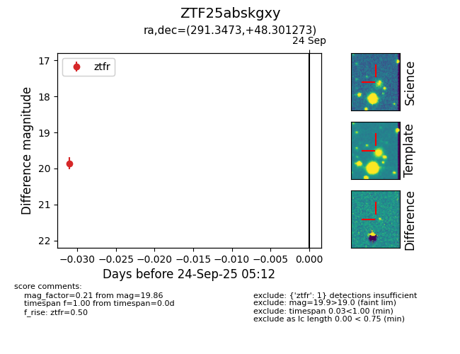

FINK: ZTF25abskgxy
Lasair: ZTF25abskgxy
ALeRCE: ZTF25abskgxy
ZTF25abskgxy (ztf,fink)
equatorial (ra, dec) = (291.3473,+48.30127)
galactic (l, b) = (80.0831,+14.65972)

last ztfr=19.86
1 ztfr detections